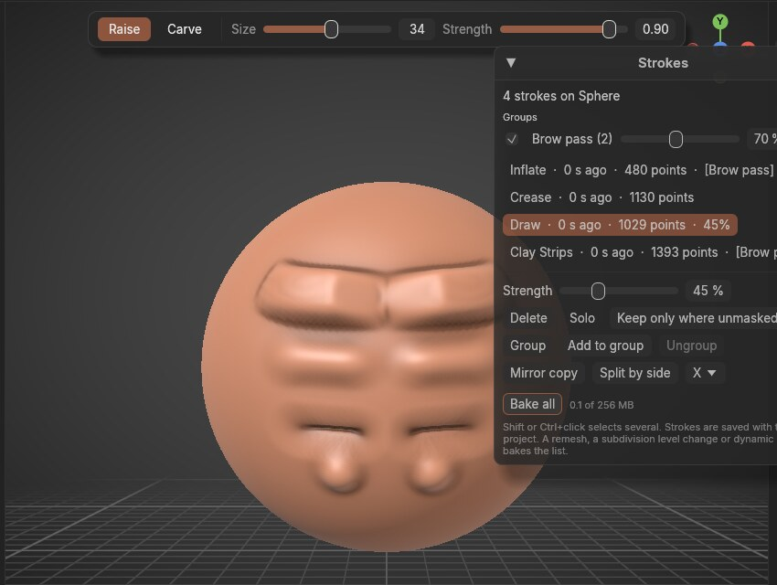
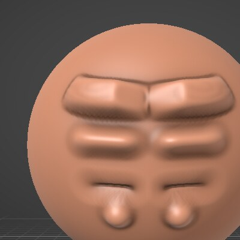
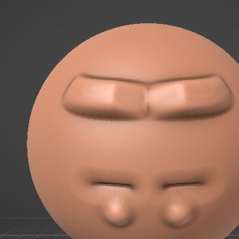
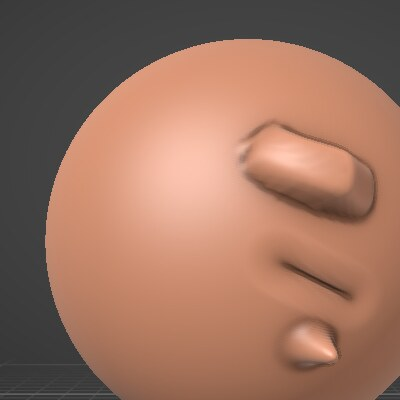
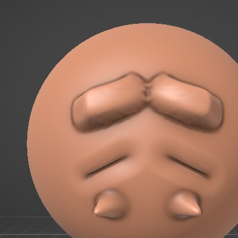

Living Strokes
Every stroke stays editable.
Reach back to a stroke you made twenty minutes ago and fade it, delete it, or take part of it away, without undoing anything you did after it. Group strokes after the fact and use the groups like sculpt layers you never had to plan for.

Take out the second stroke. Keep the third.
Undo can only go back in order. Living strokes lets you pick any stroke in the list and change just that one: here the middle stroke is deleted, and the brow made before it and the crease made after it stay exactly as they were.


What you can do with a past stroke
Select one or several strokes in the list (Shift or Ctrl+click), then:
Fade it, 0 to 150%
Drag the strength and watch the model change live. 0% hides the stroke without losing it; 150% exaggerates it.
Delete it
Its change comes off the surface; everything sculpted after it stays.
Solo it
See the selected strokes on their own, without the strokes that came after, until you click Show all.
Keep only where unmasked
Mask the half of a stroke you don't want, press it, clear the mask: that part of the stroke is gone.
Group into layers
Put strokes in a named group ("Wrinkle pass", "Scales") with its own strength slider and show/hide box. Rename, merge or ungroup at any time.
Undo it all
Every change in the Strokes window is an undo step. Undoing a stroke takes it off the list; redo brings it back.
Forgot symmetry? Mirror the stroke.
- Mirror copy puts the selected strokes on the other side of the piece's symmetry plane (X, Y or Z), as new strokes you can fade on their own. It works where the model is symmetric.
- Split by side turns a stroke made with symmetry on into one stroke per side, so you can fade or delete just the left wrinkle. Nothing on the model moves.
- Groups as shape keys: export to glTF or GLB and each group becomes a shape key named after it, so your layers are sliders in Blender or a game engine. Hidden groups are in the file at 0.


Like layers, not time travel
What a stroke remembers
When a stroke finishes, OxyBrush keeps what it changed: how far it moved each point (and the color it painted). The surface is the base plus every stroke's change times its strength, so fading a stroke moves only its own points. That's as fast as a brush dab, even on a million-triangle model.
What it doesn't do
Later strokes aren't replayed. If you smoothed over a stroke and then fade it, the smoothing stays what it was. That's how sculpt layers behave in other tools, and it keeps every change instant and predictable.
When strokes get fixed in place
Anything that rebuilds the triangles (voxel remesh, dynamic detail, decimate, booleans, changing subdivision levels) keeps the surface as it is and clears the list, and OxyBrush tells you. Bake all does the same by hand. Mask strokes aren't listed.
Memory and saving
A typical stroke takes tens of kilobytes. The list has a memory budget (256 MB by default, in Preferences); past it, the oldest strokes are fixed in place. Strokes and groups are saved with the project, and older versions of OxyBrush still open the file.
Try it in a minute
Living strokes is off by default, so people who don't use it pay no memory for it.
- 1Turn it on: Preferences > General > Living strokes, or open Mesh > Strokes… and click Turn on Living strokes.
- 2Sculpt three or four strokes on a sphere with any brushes.
- 3Open Mesh > Strokes… (also in the command palette), click the second stroke and drag Strength to 0%. The strokes you made after it stay.
- 4Shift+click two strokes, press Group, and use the group's slider and box like a layer.
The in-app guide (Help > Guide, topic "Living strokes") covers every button.
Every action, as JSON
In-app plugins (API 4) read the strokes with strokes_state and run any Strokes window action with stroke_command. A local AI agent gets the same through the MCP tools list_strokes and edit_strokes. Each change is an undo step labelled with who made it.
// fade a group to 60%
{"op": "group_strength", "group": 1, "strength": 0.6}
// copy strokes to the other side
{"op": "mirror", "strokes": [3, 4], "axis": "x"}
// one stroke per side
{"op": "split_by_side", "strokes": [7]}